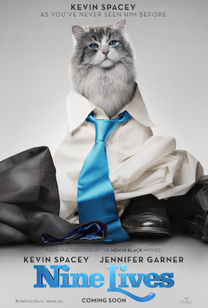

Latest film:
Nine Lives
A stuffy businessman finds himself trapped inside the body of his family's cat.
Tom Brand (Kevin Spacey) is a daredevil billionaire at the top of his game. His eponymous company FireBrand is nearing completion on its greatest achievement to date - the tallest skyscraper in the northern hemisphere. But Tom's workaholic lifestyle has disconnected him from his family, particularly his beautiful wife Lara (Jennifer Garner) and his adoring daughter Rebecca (Malina Weissman).